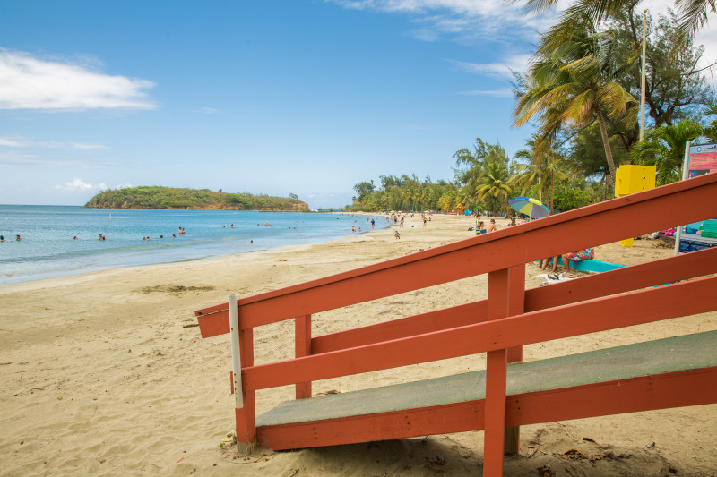

Isla de Cabras
Esta pequeña isla conectada por tierra tiene algunas de las mejores vistas de la Bahía de San Juan y el área del Viejo San Juan. En la isla, encontrará instalaciones recreativas y estacionamiento en el lugar. El parque es un gran lugar para caminar y pescar.
Pueden visitar la Isla de Cabras en:
- Dirección: Palo Seco, Toa Baja 00949
Balneario Punta Salinas
Administrada por el programa de parques nacionales de Puerto Rico, esta playa cuenta con instalaciones que solo tienen ciertas playas de la isla. Entre las instalaciones que encontrarás en esta playa se encuentran duchas, baños, áreas verdes para la recreación, canchas de baloncesto, área de voleibol de playa y socorristas.
Pueden visitar el Balneario Punta Salinas en:
- Dirección: FRF7+GH6, PR-165, Sabana Seca, 00949
El Cañuelo
El Fortín San Juan de la Cruz, conocido localmente como El Cañuelo, está localizado en Isla de Cabras, Puerto Rico. Es parte del Sitio Histórico Nacional de San Juan, Patrimonio de la Humanidad desde 1983. Este fuerte fue originalmente construido en madera en 1610.
Pueden visitar El Cañuelo en:
Playa Parchola
Esto es una play hermosa de aguas cristalinas en Toa Baja.
Pueden visitar la Playa Parchola en:
- Dirección: FQ8P+FVM, PR-165, Toa Baja, Dorado 00949